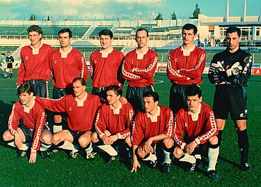
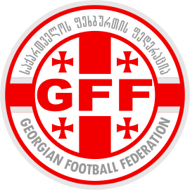

საქართველოს ეროვნული ნაკრების ისტორია 1990 წელს იწყება, მანამდე ქართველი ფეხბურთელები თამაშობდნენ საბჭოთა კავშირის ეროვნულ საფეხბურთო გუნდში. პირველი მატჩი საქართველოს საუკეთესო ფეხბურთელებმა ლიეტუვასთან გამართეს, რადგანაც პირველად ლიეტუვა გამოეხმაურა ქართული მხარის მიწვევას. ეს მატჩი 1990 წლის 27 მაისს ეროვნულ სტადიონზე გაიმართა. მასპინძელთა ღირსებას იცავდენენ: ასლან ბალაძე, გელა კეტაშვილი, კახა ცხადაძე (71' კახაბერ კაჭარავა), დიმიტრი კუდინოვი, გია ფირცხალავა, გიორგი ნადირაძე, თემურ ქეცბაია, ზაზა რევიშვილი (46' მელორ ბიგვავა),[5] ოთარ კორღალიძე (46' როსტომ თორღაშვილი), გია გურული, მამუკა ფანცულაია (46' გოჩა გოგრიჭიანი). მწვრთნელი გივი ნოდია. შეხვედრა ფრედ — 2–2 დამთავრდა. ეს იყო დამოუკიდებლობის აღდგენამდე გამართული ერთადერთი მატჩი. შეხვედრას 55 000 მაყურებელი დაესწრო. ბალტიისპირელები ორჯერ იგებდნენ, მაგრამ ჯერ გია გურულმა გაათანაბრა ანგარიში, მერე კი კახა კაჭარავამ. საქართველოს ეროვნული ნაკრების პირველი გოლი გია გურულმა გაიტანა. ნაკრების პირველი კაპიტანი ოლიმპიული ჩემპიონი გელა კეტაშვილი იყო. 1990 წელს საქართველოს ფეხბურთის ფედერაცია ჯერ კიდევ არ იყო ფიფას და უეფას წევრი, ამიტომ ლიეტუველებთან გამართული მატჩი ნაკრების ფიფას ჩამონათვალში არ ირიცხება.[6][7]ამის შემდეგ 1991 წლის 2 ივლისს, საქართველოს ნაკრებმა კიდევ ერთი ამხანაგური შეხვედრა გამართა მოლდოვასთან და ანგარიშით 4–2 გაიმარჯვა.[8]
 1992 წელს საქართველოს ფეხბურთის ფედერაცია ფიფას და უეფას წევრი გახდა და საქართველომ მიიღო შეჯიბრებებში მონაწილეობის უფლება. პირველი ოფიციალური თამაში იყო ევრო 96-ის შესარჩევ ციკლში, სადაც ქართველი ფეხბურთელები მოლდოვასთან 1–0 დამარცხდნენ. ეს იყო 1994 წლის სექტემბერში.[9] საქართველო ამ ჯგუფში მე-3 ადგილზე გავიდა, გადაუსწრო მოლდოვას და უელსს, მაგრამ 7 ქულით ჩამორჩა მეორეადგილოსან ბულგარეთს. მსოფლიოს 1998 წლის ჩემპიონატის შესარჩევ ციკლში საქართველოს ეროვნულმა ნაკრებმა 8 თამაშიდან მოიპოვა 3 გამარჯვება, 1 ფრე და ჯგუფში მესამე-მეოთხე ადგილი პოლონეთთან გაიყო, თუმცა მეტი კოეფიციენტების გამო ქართველებზე წინ პოლონელები გავიდნენ. აღსანიშნავია, რომ 1998 წელს საქართველოს ნაკრებს ფიფას რეიტინგში ისტორიაში ყველაზე მაღალი — 42-ე ადგილი ეკავა. 2000 წლის ევროპის ჩემპიონატის შესარჩევ ციკლში საქართველოს ეროვნულმა ნაკრებმა 10 თამაშიდან 1 მოგებას და 2 ფრეს მიაღწია და 5 ქულით ჯგუფში ბოლო ადგილზე გავიდა.
2002 წლის მუნდიალის შესარჩევ ციკლში კი საქართველოს ნაკრებმა გაიმეორა ევროპის 1996 წლის ჩემპიონატის შესარჩევ ეტაპზე მიღწეული წარმატება და ჯგუფში მესამე ადგილი დაიკავა. ამის შემდეგ კი იწყება ნამდვილი რეგრესის ხანა — ევრო 2004-ის შესარჩევში გუნდმა ბოლო ადგილი დაიკავა, თუმცა ამ ციკლში ქართველებმა ისტორიაში ერთ-ერთი ხმაურიანი გამარჯვება იზეიმეს, დაამარცხეს რა რუსეთის ეროვნული ნაკრები ანგარიშით 1–0. შეხვედრის ერთადერთი გოლი მალხაზ ასათიანმა გაიტანა. იგივე შედეგი გაიმეორა 2006 წლის მსოფლიო ჩემპიონატის შესარჩევში ქართველებმა მხოლოდ ყაზახეთის ეროვნულ ნაკრებს აჯობეს, თუმცა აღსანიშნავია, რომ ყაზახებმა უეფა-ს წევრის სტატუსით ჩატარებულ მატჩებში პირველი ქულა სწორედ საქართველოს ნაკრებთან მოიპოვეს. ევრო 2008-ის შესარჩევში საქართველომ ტრადიციას არ უღალატა და კვლავ მხოლოდ ერთ გუნდს, ამჯერად ფარერების ნაკრებს გადაასწრო, თუმცა საქართველოს ნაკრებმა ამ შესარჩევშიც ჩაატარა დასამახსოვრებელი მატჩები, დაამარცხა რა ფარერების ნაკრები გასვლაზე 6–0, შესარჩევი ციკლის გახსნით მატჩში და ციკლის მიწურულს 2–0 დაამარცხა იმ პერიოდში საკმაოდ ძლიერი შოტლანდიის ნაკრები, რომელმაც ამ წაგებით ფაქტობრივად დაკარგა ჯგუფიდან გასვლის შანსი. ამ მატჩში გოლები ლევან მჭედლიძემ და დავით სირაძემ გაიტანეს. ამავე წელს ამხანაგურ თამაშებსში ქართველებმა დაამარცხეს ურუგვაის და თურქეთის ნაკრებები. შემდეგი შესარჩევი ციკლი (მსოფლიო 2010) კი ანტირეკორდის ხანა იყო — ქართველებმა ვერცერთი თამაში მოიგეს და ჯგუფში ბიოლო ადგილზე გავიდნენ. ამ დროს ნაკრებს ცნობილი არგენტინელი სპეციალისტი ექტორ რაულ კუპერი წვრთნიდა.